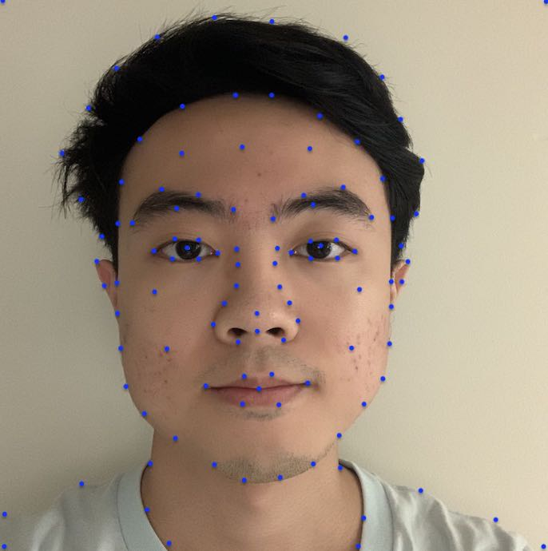
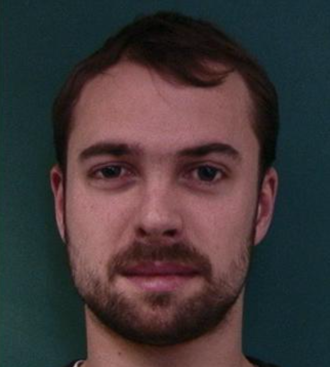
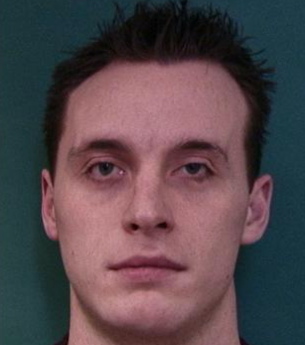
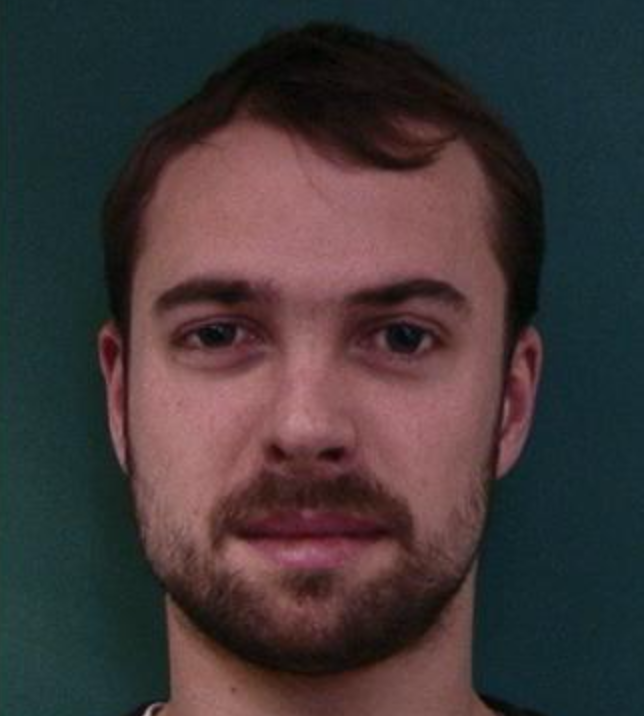
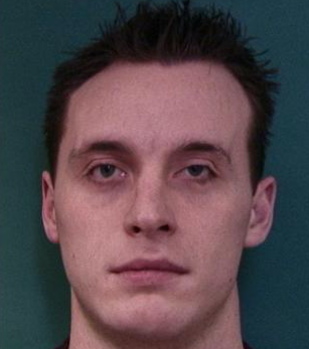

CS194 PROJECT Three - Alex Wu
Defining Correspondences
To compute the mid-way face, I have defined and labelled 110 points for my face and naval's face. I have made sure that they are created in the same order so that every point corresponds to the other points in the other image.
The two original pictures and my face with points labelled.
Computing the "mid-way" faces.
me original image
mid-way face
naval original image
Here is the result of the mid-way face. After I labelled both faces. I calculate the average of these points. Then, I created triangulation for the average points. I wrote the computeAffine function where it computes the inverse matrix so as to calculate the inverse warpping of each pixels. Next, I use a mask to apply the inverse matrix to each triangle. After inverse warpping through every triangle, we get the first face warp into the mid-way face shape. We repeat this process on the second image, then we add these two images together, we get the mid-way face.
The Morph Sequence
To get the morph sequence of the face, I wrote the morph function, where it also takes warp_frac, dissolve_frac variables. Both variables start at zero and end at one. There are in total 45 frames that I have created, and each frame last around 1/30 seconds.
The "Mean face" of a population
I picked the Danes face dataset to calculate the mean face of a population. Here are the results that I acheive. The first image is the average face of male scientists. The second image is the average face of female scientists. The third image is me warpping into the shape of average face of male scientists. The fourth image is the average face of male scientists warp into my face.
Here are some of the examples of faces warpped into the average face.
 



Caricatures: Extrapolating from the mean
Here are the results when we extrapolate from the mean. The first one is the original image. I calculate the difference between that and the mean male face that I got from the last part. The second image is the result when I add (-2) * delta to my original face. As you can see, it shows up many "reverse" feature of my face ---- pointy chin, short and square face. The third image is the result when I add (2) * delta to my original face. Many of my face's feature get enhanced ---- square chin, very long face.
Extra credit: change ethnicity of my face.
I download average african face from the internet (first image), and then morph my face with that average african face in three different ways: only shape (second), only appearance (third), and both shape and apperance (last). Here are the results: